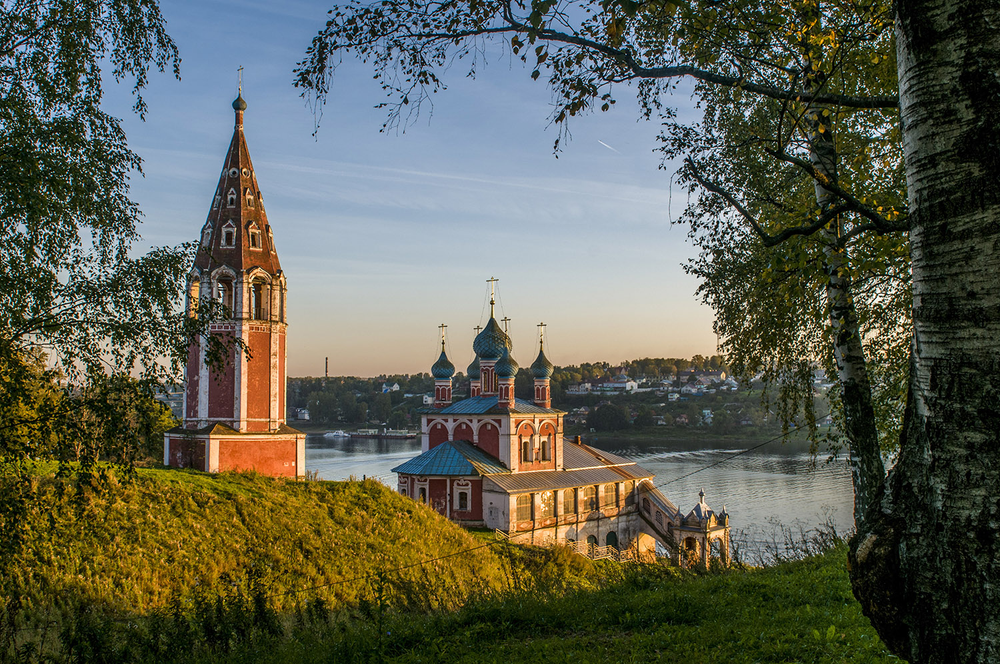

Тутаев
Тутаев – это небольшой провинциальный город, который находится на территории Ярославской области. Населенный пункт славится обилием старинных храмов, красотой ландшафтов и музеями. Тутаев вырос из двух поселений – Романова и Борисоглебска. В 1822 году их объединили в один город, а в начале XX века его переименовали в честь героя-красноармейца.

Воскресенский собор громаден сам по себе, он обнесен каменной стеной с красивыми воротами, а рядом стоит чуть накренившаяся, украшенная каменными узорами, колокольня. На месте собора, с начала 16-го века стояла деревянная, с пятью куполами, церковь Бориса и Глеба, давшая название всей слободе. В 1652 году ее заменили на каменную шатровую церковь с трапезной и двумя приделами того же имени. Сюда постоянно приезжают российские космонавты. Здесь они венчаются и принимают крещение.

Как только вы очутились на левом берегу, вас тут же встречает у подножия Волги красивейшая Церковь Казанской иконы Божией Матери и Спаса Преображения. В храме регулярно проводятся службы священниками Тутаевского благочинного округа, а также ежегодные крестные ходы с чудотворным списком Казанской-Ярославской иконы Божией Матери. Востанавливается храм давно и весьма успешно.